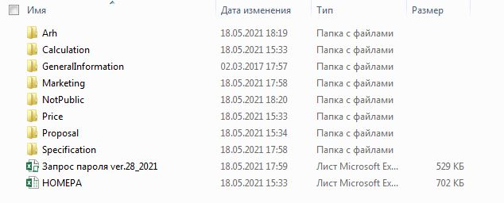

Программа подбора оборудования. Руководство
Общие сведения о программе подбора оборудования
Программа подбора оборудования предназначена для:
- Расчета себестоимости оборудования производства Экополимер (только изделия из металла);
- Подготовка текнико-коммерческих предложений;
- Подготовки комплексных технико-коммерческих предложений на оборудование;
- Подготовки РДЦ (расчет договорной цены) для сотрудником отдела маркетинга;
- Подготовки спецификаций оборудования для проектного отдела;
Структура папки подбора оборудования
 Рисунок 1 - структура папок внутреннего каталогаСоздание новых папок объектов
При поступлении задачи для объекта который ранее не прорабатывался (папки с названием объекта нет в папке "1. Архив") необходимо в папке "1. Архив" создать папку объекта. Для создания папки объекта необходимо использовать шаблон папки "0. ШАБЛОН" находящийся в папке "1. Архив"
Название папки объекта должно соответствовать следующему шаблону: "Название объекта (Фамилия менеджера объекта)", пример приведен на Рисунке 2. Вся последующая внутренняя структура папки должна соответствовать шаблону.
 Рисунок 2 - название папок объектов
Рисунок 2 - название папок объектов
Добавление папок из "1. АРХИВ" в "2. ТЕКУЩИЕ"
Для удобства поиска ссылка на папку объекта может быть вынесена в специальную папку "2. Текущие", это позволяет максимально быстро получить доступ к папкам выполняемых на данный момент объектов. По завершению работы с объектом ссылка на папку удаляется.